Личный учёт денег: расходы и доходы, счета, чеки, долги и накопления.
Всё считается на телефоне и работает без интернета.
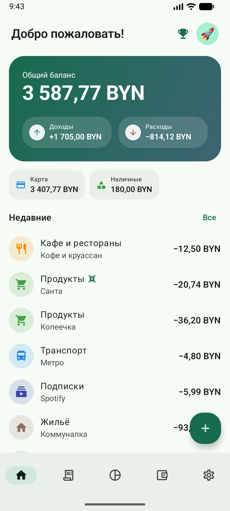
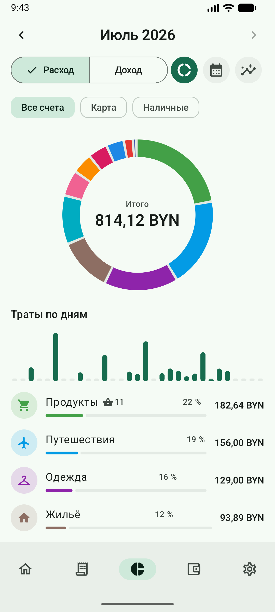
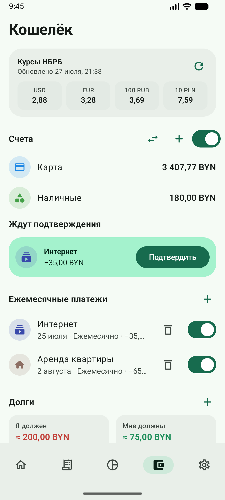
Коротко о главном
Запись — три касания: +, сумма, категория.
Чек можно сфотографировать — сумма, магазин и позиции подставятся сами.
Базовая валюта — белорусский рубль (₽), курсы берутся у НБРБ.
Регулярные платежи никогда не списываются сами — только по вашему подтверждению.
Июль 2026 · Обновление приложения — «Настройки → Версия»
Содержание
Знакомство при первом запуске
Пять экранов и навигация
Главная
Новая запись и калькулятор
Позиции внутри записи
Скан чека
История
Статистика
Кошелёк
Достижения
Настройки и обновление
Блокировка приложения
Аккаунт и синхронизация
Категории, которые не только считают
Частые вопросы
1. Знакомство при первом запуске
При первом входе приложение показывает шесть карточек: что где находится и куда нажимать.
Листать — кнопкой «Дальше» или свайпом, «Пропустить» — сразу к работе.
Знакомство показывается один раз; подробности — в этом руководстве.
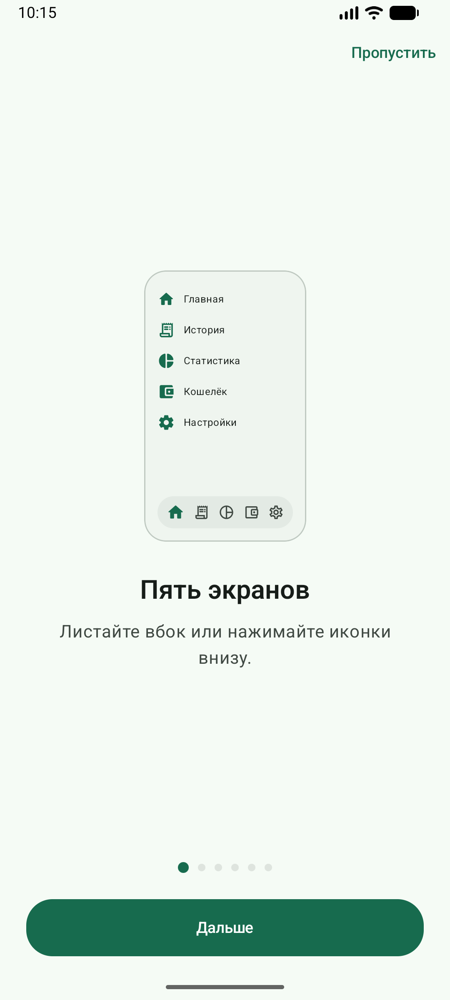
1. Пять экранов внизу
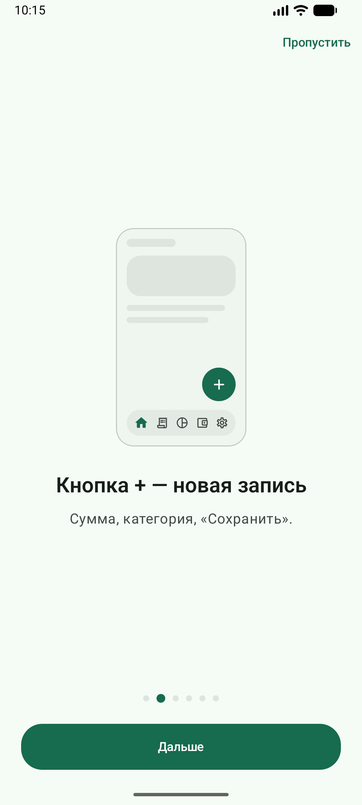
2. Кнопка + — новая запись
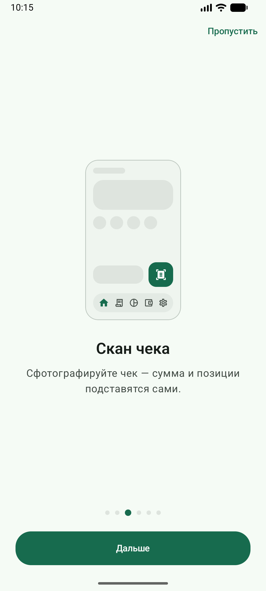
3. Скан чека вместо ввода
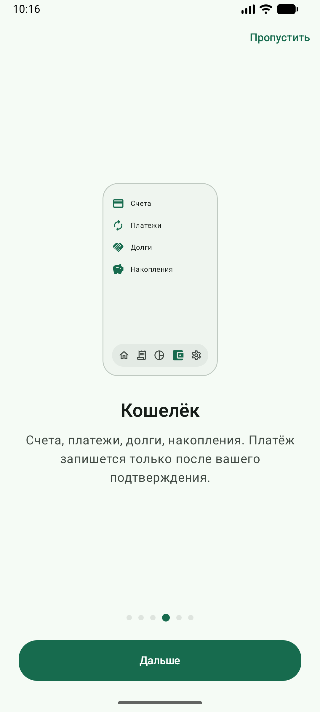
4. Что лежит в Кошельке
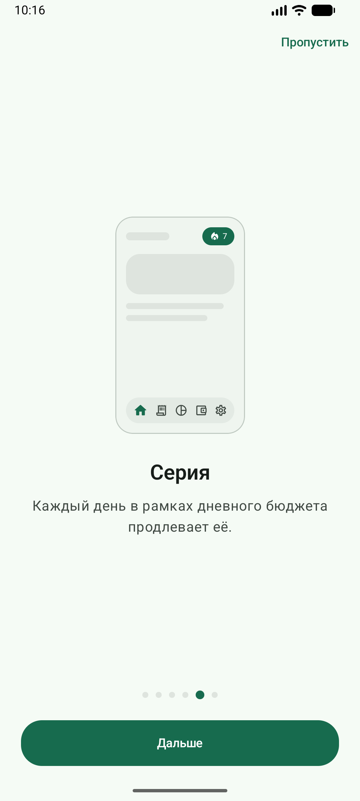
5. Серия дней в бюджете
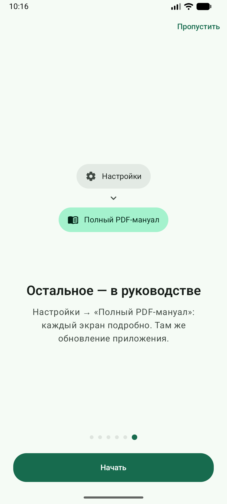
6. Где искать это руководство
2. Пять экранов и навигация
Иконка
Экран
Что там
Главная
Баланс, счета, недавние записи, кнопка +
История
Все записи, поиск, фильтры, удаление
Статистика
Графики по категориям и дням, календарь
Кошелёк
Курсы, счета, платежи, долги, цели, накопления
Настройки
Профиль, вид, валюта, безопасность, обновление
Свайп между экранами. Пять экранов можно перелистывать пальцем влево-вправо
в любом месте, включая списки записей.
3. Главная
Баланс, счета и последние записи
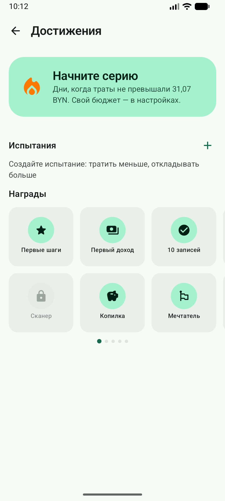
Кубок в шапке ведёт к достижениям
Приветствие — никнейм из профиля. Отключается: «Настройки → Интерфейс».
Общий баланс — доходы минус расходы плюс ручные корректировки счетов.
Если валюта приложения не белорусский рубль, ниже видно пересчёт по курсу НБРБ.
Доходы и Расходы — итоги текущего месяца. Если сумма не влезла и обрывается
многоточием, тап показывает её целиком.
Плитки счетов появляются, когда счетов больше одного.
Недавние — последние записи; тап открывает запись на правку, «Все» ведёт в Историю.
У записи с позициями под названием стоит корзинка с их числом — тап раскрывает товары
под строкой, как в статистике. Корзинка не стоит между строкой и суммой, поэтому
суммы во всём списке выстроены в одну колонку.
🔥 Серия и 🏆 кубок — дни в дневном бюджете и экран «Достижения».
Аватар — тап открывает профиль: никнейм и фото. Никнейм — единственное имя,
которым приложение к вам обращается; отдельного поля «Имя» больше нет.
4. Новая запись и калькулятор
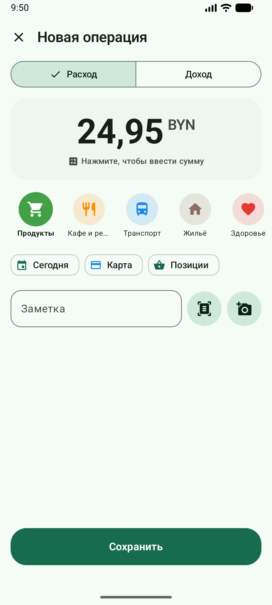
Сумма, категория, чипы, заметка
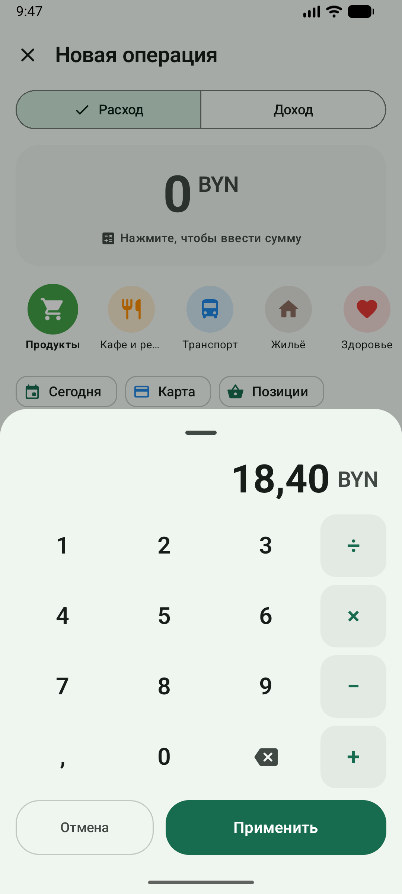
Калькулятор открывается сам
Нажмите + на Главной или в Истории.
Наберите сумму: калькулятор открывается сразу. Можно считать — 12,50+3,90;
пока действие не завершено, большая кнопка показывает «=». «Применить» переносит результат в запись.
Знаков после запятой можно набрать сколько нужно — например, цену за килограмм 4,375;
в сумму записи результат придёт округлённым до копеек.
Выберите категорию в карусели. Кружок «Новая» создаёт свою: имя, иконка или картинка из галереи, цвет.
Удержание и перетаскивание меняет порядок категорий во всём приложении.
Правка открывает окно на том, что уже выбрано: ряды иконок и цветов прокручены
к текущим, а удаление сначала спрашивает и переносит записи в «Другое».
При необходимости поправьте дату, счёт, позиции, заметку.
Сохранить.
Расход или доход — переключатель сверху либо свайп по карточке суммы.
Чип даты открывает календарь; по умолчанию — сегодня.
Чип счёта появляется, когда счетов больше одного, и новая запись начинается
с того счёта, на котором была прошлая.
Кнопки справа от заметки — скан чека и фото к записи.
«В накопления» — под каруселью появляются ваши незакрытые цели. Выбранная цель
получает пополнение сразу при сохранении: одна запись вместо записи и отдельного «Отложить».
Если цель в другой валюте и включён «Свой курс», рядом появится поле курса;
оставите пустым — посчитается по НБРБ.
«Возврат долга» — так же появляются долги, которые вы должны. Выбранный долг
уменьшится на сумму записи (или закроется), и удаление записи вернёт его обратно.
При правке записи в шапке появляется корзина: она спрашивает подтверждение,
а после удаления внизу ещё ждёт «Отменить».
5. Позиции внутри записи
Позиции говорят, из чего состоит запись: товары из чека или части платежа (аренда, коммуналка).
Чип с корзинкой в редакторе открывает список; он есть только у расходов.
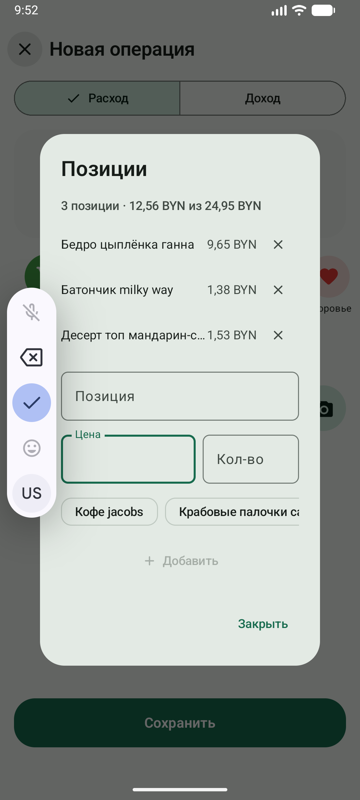
Название, цена, количество
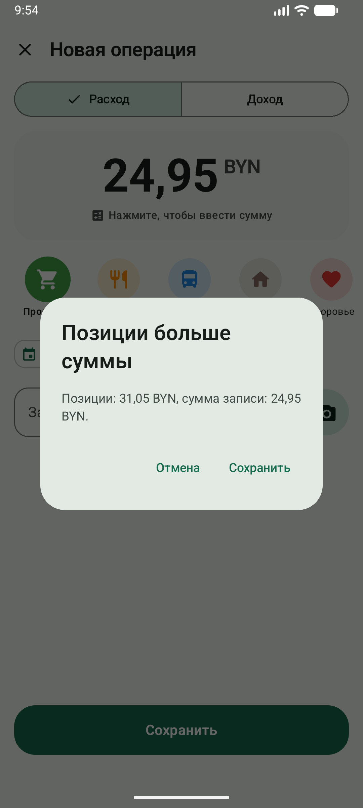
Предупреждение перед сохранением
Наберите название (уже использованные предлагаются чипами), при желании цену и количество — «Добавить».
Тап по строке правит её, ✕ убирает.
Суммы позиций стоят в своей колонке: она начинается на одном и том же месте,
цифры прижаты вправо, названия обрываются там, где колонка начинается.
Если сумма записи не введена, она считается из позиций — набрали товары, сумма собралась сама.
Если позиции дороже суммы, перед сохранением приложение спросит подтверждение:
обычно это опечатка в цене.
Статистика складывает одинаковые названия, не глядя на регистр и лишние пробелы.
6. Скан чека
Кнопка со сканером в редакторе разбирает чек прямо на телефоне: небольшая модель находит
итог, магазин, дату и позиции. Фото никуда не отправляется.
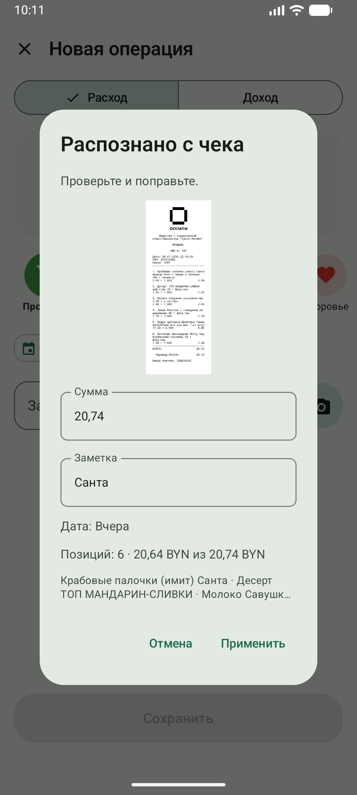
Что нашлось — можно поправитьПосле «Применить»: метка скана и позиции
Сканер → «Сфотографировать» или «Выбрать из галереи».
Пока идёт разбор, над суммой видна строка «Читаем чек…».
В окне «Распознано с чека» проверьте сумму и магазин.
«Применить» подставляет в запись сумму, дату, заметку с магазином, позиции и фото чека.
QR-код. Если на чеке есть QR электронного чека, приложение перейдёт по нему
и возьмёт данные из самого чека — это точнее, чем с фотографии. Чип «Открыть электронный чек» потом откроет его.
Когда за QR открывается страница, на которой ничего не видно (товары подгружаются скриптом — так устроен
и проверочный сервис МНС), приложение читает то, что страница несёт в себе — данные чека из её скриптов,
а если и там пусто, прогоняет страницу как браузер и читает то, что на ней появилось. Дата на странице
за сумму не считается. К записи сохраняется именно увиденное — копия страницы без скриптов, поэтому
«Открыть электронный чек» показывает покупки и без интернета. Если не удалось прочитать ничего, сумма,
дата и магазин берутся с бумаги.
Белорусские чеки. На большинстве чеков в РБ в QR зашит не адрес страницы,
а только уникальный идентификатор — 24 символа, те же, что напечатаны строкой «УИ». Kosht его понимает:
для магазинов на кассах iKassa (Соседи и другие) чек по этому идентификатору открывается целиком —
с магазином, позициями и итогом. Для чеков Евроопта, где QR ведёт на r.eplus.by, приложение
забирает PDF электронного чека и читает его: печатный PDF разбирается точнее, чем фотография бумаги.
QR-код оплаты ЕРИП за чек не принимается, и посторонняя ссылка больше не создаёт пустую запись.
Мятый или тусклый чек тоже читается: снимок выравнивается по яркости и разбирается в несколько проходов.
Позиции понимаются и когда название переносится на несколько строк, и когда цена напечатана
как «цена × количество».
Если сумма не нашлась, приложение скажет об этом — снимите ярче и ровнее.
7. История
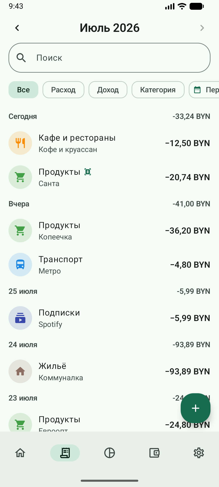
Поиск, фильтры, итоги по дням
Месяц листается стрелками; фильтр «Период» задаёт произвольные даты.
Поиск — по заметке и категории. Фильтры: расход, доход, категория.
Над каждым днём — итог дня.
У записи с позициями под названием стоит корзинка с их числом и стрелкой: тап раскрывает
товары в панели, выровненной по строке выше — названия под названием, суммы под суммой
(и «количество × цена» тихой строкой). Суммы стоят в своей колонке: она начинается
на одном и том же месте, поэтому цена не липнет к названию.
Тап по самой строке по-прежнему открывает правку.
Удаление живёт внутри записи: тап по строке открывает её, корзина — в шапке.
Из списка запись удалить нельзя, так что смахнуть её случайно невозможно.
Перед удалением приложение спрашивает — и здесь, и всюду, где есть корзина:
счёт, категория, платёж, долг, цель, накопление, испытание, чек и фото у записи.
После удаления внизу появляется «Отменить» — запись вернётся вместе со всем, что она сдвинула.
8. Статистика
Круг по категориям и траты по дням
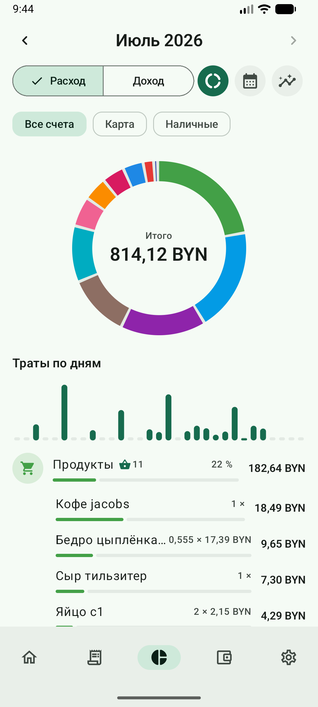
Тап по категории раскрывает товары
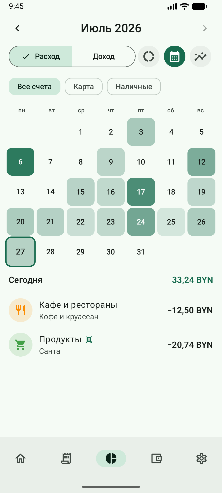
Теплокарта месяца
Две круглые кнопки справа переключают графики и календарь.
Круг — доли категорий, в центре итог. Тап по дольке показывает в центре её
категорию, сумму и процент; повторный тап возвращает итог. Ниже — столбики по дням месяца.
Длинная сумма в центре не обрезается многоточием: шрифт сам уменьшается, пока она не влезет.
Столбики отвечают на тап: выбранный день остаётся ярким, остальные притухают,
а под графиком появляются его дата и сумма. Повторный тап снимает выбор.
Название, которое не влезло по длине, обрывается многоточием и раскрывается тапом —
и у категории, и у товара.
Корзинка и число в строке категории означают, что внутри есть позиции.
Тап раскрывает товары: название, а под ним количество × цена — сумма справа
не дублируется. Полоски товаров окрашены в цвет своей категории —
сразу видно, к чему они относятся.
Календарь — чем темнее день, тем больше траты; тап по дню показывает его записи.
Фильтр по счёту появляется, когда счетов больше одного.
9. Кошелёк
Курсы, счета, платежи, долги
Курсы НБРБ
USD, EUR, 100 RUB и 10 PLN на сегодня; кнопка обновления перезапрашивает. Карточку можно скрыть в настройках.
Счета
Тумблер включает режим счетов, + добавляет счёт (имя, иконка или картинка, цвет).
Выключенный тумблер только скрывает счета: они остаются на месте вместе с записями.
Тап по счёту открывает карточку: переименование, вид, реальный остаток, удаление
(его записи переедут на основной счёт). Ряды иконок и цветов открываются на том,
что уже выбрано, а не с начала.
Кнопка ⇄ переводит деньги между счетами. Перевод — не трата, в статистику расходов он не попадает.
Поле комиссии включается в настройках.
Ежемесячные платежи
+ создаёт платёж: название, сумма, категория, дата и периодичность.
Когда срок подошёл, платёж поднимается в блок «Ждут подтверждения».
«Подтвердить» открывает окно, где можно поправить сумму и курс, — запись появится только после этого.
«Пропустить» рядом — для месяца, когда платить не пришлось: запись не создаётся,
платёж просто сдвигается на следующий срок. Приложение сначала скажет, на какое число.
Тумблер выключает платёж: название и иконка гаснут, так что выключенный виден с первого взгляда.
Корзина удаляет — и сначала спрашивает.
Само ничего не списывается. Приложение только напоминает — записывает всегда человек.
Долги, цели и накопления
Долги — «Я должен» и «Мне должны», с частичным погашением и закрытием.
Погашение можно сразу записать в историю. У долга, который сам родился из записи,
этого выбора нет: он уже в истории, поэтому ни галочки, ни счёта списания не показывается.
Цели — на что копите и сколько нужно; полоса показывает прогресс.
Накопления — «Отложить» и «Снять», при желании со списанием со счёта.
Тап по строке открывает правку: сумма, «отложил» или «снял», валюта, заметка,
дата и цель. Удаление живёт в этом же окне и спрашивает подтверждение.
Свой курс при пересчёте. Включите «Настройки → Свой курс», и каждый раз, когда
валюты не совпадают, в окне появится поле курса — заполненное курсом НБРБ, но
готовое принять ваш. Курс запоминается в заметке (1 $ = 3,25 ₽) и
попадает в запись списания, так что видно, по какому курсу вы на самом деле сняли.
Тумблер выключен — пересчёт идёт по НБРБ молча, как раньше.
10. Достижения
Серия — дни подряд, когда траты не превышали дневной бюджет (бюджет задаётся в настройках).
Испытания — личные вызовы: удержать лимит, прожить без трат, накопить.
Срок выбирается чипами (неделя, до конца месяца, 30 дней) или своими датами в календаре.
Испытание «Накопить» берёт свою валюту, и в Кошельке появляется одноимённая
цель накопления: отложенное на неё двигает и полосу цели, и прогресс испытания.
Правки названия, суммы или валюты уезжают в цель, уже отложенное пересчитывается по курсу НБРБ.
Награды приходят сами за серии, записи, накопления и закрытые долги.
Их 44: первые даются с первой записи, последние — за годы учёта, 5000 записей,
12 идеальных месяцев подряд и крупные накопления.
11. Настройки и обновление
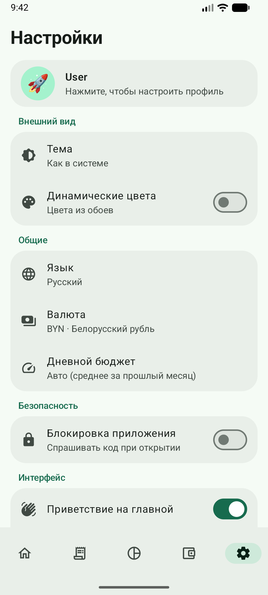
Сгруппированные блоки
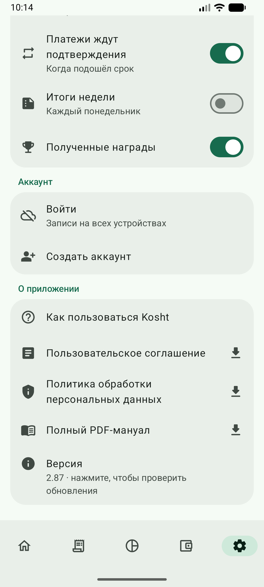
Руководство, документы, версия
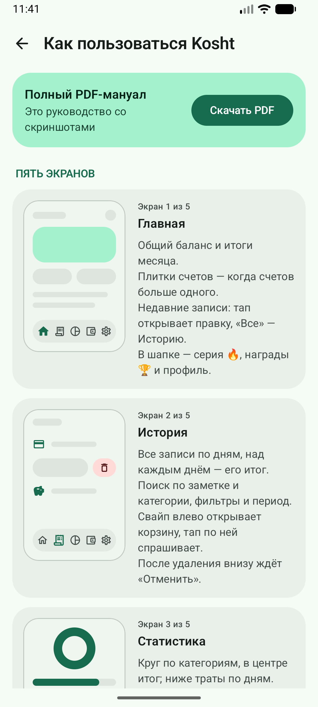
Короткий гид в приложении
Блок
Что настраивается
Профиль
Имя, никнейм, фото или готовый аватар
Внешний вид
Тема (как в системе, светлая, тёмная), динамические цвета из обоев
Общие
Язык, валюта, приветствие и серия на главной, курсы в кошельке, калькулятор при добавлении, комиссия за перевод, свой курс при пересчёте
Счета
Список счетов, порядок, вид
Уведомления
Ежедневное напоминание, платежи, итоги недели, награды
Безопасность
Код доступа, вход по биометрии, через сколько спрашивать код
Аккаунт
Вход, синхронизация, выход, удаление аккаунта
О приложении
Гид, соглашение, политика, этот PDF, версия и обновление
Как обновить приложение. «Настройки → О приложении → Версия»:
нажмите на строку с версией. Приложение проверит, есть ли новая, и предложит скачать и установить её —
браузер не нужен, данные остаются на месте. Kosht ставится вне магазина, поэтому Android один раз
спросит разрешение на установку — его нужно дать.
Смена валюты пересчитывает суммы по текущему курсу НБРБ. У расходов эквивалент в белорусских рублях
фиксируется на момент оплаты, накопления пересчитываются по актуальному курсу. Суммы подписываются
значком валюты: ₽, $, €, zł, ₴, £, ₸. Белорусский рубль носит собственный значок — «Б» с чертой;
при копировании текста наружу он превращается в обычный ₽, поэтому российский рубль
подписывается кодом RUB.
12. Блокировка приложения
«Настройки → Безопасность» закрывает приложение своим кодом.
Код придумываете вы (от четырёх цифр) и вводите дважды. В открытом виде он не хранится
и не уезжает в аккаунт.
Вход по биометрии — строка появляется, если в телефоне настроен отпечаток или лицо.
Кнопка отпечатка есть прямо в клавиатуре кода.
«Спрашивать код» — через сколько минут после выхода спрашивать снова; «Сразу при выходе» = 0.
Съёмка чека или выбор фото уходом не считаются.
Неверный код: точки краснеют, телефон вибрирует. С пятой ошибки клавиатура ждёт — полминуты,
минуту, пять, пятнадцать. Отпечаток не ждёт никогда.
Забытый код восстановить нельзя — поможет только переустановка.
13. Аккаунт и синхронизация
Без аккаунта всё работает и остаётся только на телефоне.
С аккаунтом записи, счета, категории, долги и цели одинаковы на всех ваших телефонах.
Изменения уходят, когда есть интернет; офлайн приложение работает как обычно.
Фото чеков синхронизируются отдельным тумблером — они тяжёлые. Включённый тумблер
дополнительно хранит их на удалённом сервере; выключение удаляет копии оттуда.
Код блокировки не синхронизируется никогда.
«Удалить аккаунт» убирает копию в облаке безвозвратно; записи на этом телефоне остаются.
14. Категории, которые не только считают
Четыре встроенные категории двигают не только цифры:
Категория
Что происходит
Долг (доход)
Появляется поле «Кому я должен» — после сохранения в Кошельке открывается долг на ту же сумму
Вернул долг (расход)
Гасит выбранный долг
В накопления (расход)
Пополняет накопления или цель
Из накоплений (доход)
Снимает с накоплений
Удалите такую запись — и то, что она сдвинула, вернётся обратно. «Отменить» после удаления
возвращает обе стороны.
15. Частые вопросы
Куда пропал чип счёта?
Он появляется, только когда счетов больше одного, — чтобы не мешать, пока счёт один.
Почему сумма записи изменилась сама?
Если сумма не была введена, она считается из позиций. Введённую вручную сумму приложение не трогает.
Как записать снятие наличных с карты?
Это перевод, а не трата: «Кошелёк → Счета → ⇄».
Почему запись помечена сканером?
Метка показывает, что сумма пришла с чека, а не набрана руками, — видно и в списках.
Серия сбросилась, хотя я записывал каждый день
Серия считает дни в рамках дневного бюджета, а не сам факт записи.